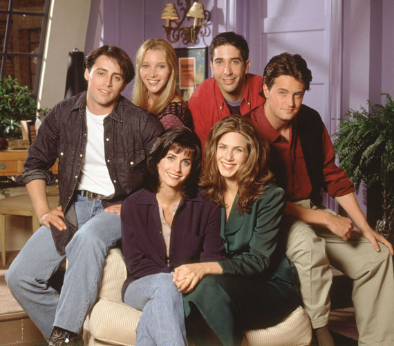
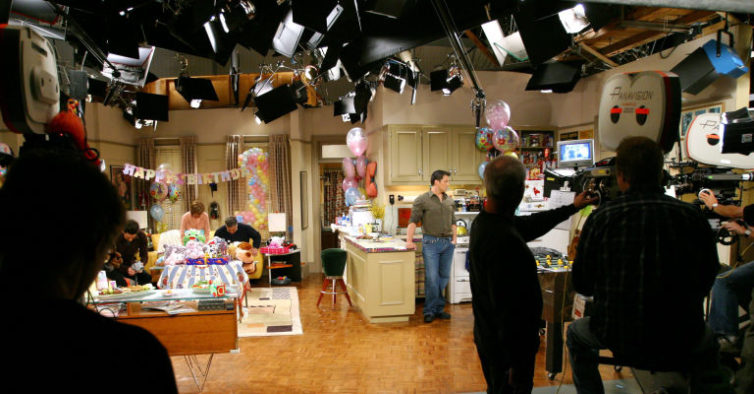

Sobre
Friends é uma série americana criada por David Crane e Marta Kauffman e apresentada pela
rede de televisão NBC entre 22 de setembro de 1994 e 6 de maio de 2004, com um total de 236
episódios. A série girava em torno de um grupo de 6 amigos, sendo 3 mulheres e 3 homens que
viviam no bairro de Greenwich Village, na ilha de Manhattan, na cidade de Nova York.

A série foi produzida por Bright, Kauffman, Crane Productions em associação com a Warner Bros Television.
Os produtores executivos originais foram Crane, Kauffman e Kevin S. Bright, com muitos outros
a serem promovidos posteriormente.
Kauffman e Crane começaram a desenvolver Friends sob o título de 'Insomnia Cafe' em novembro de 1993.
O diretor de cinema Cameron Crowe alega que a série foi inspirada no seu filme de 1992, Singles. Kauffman
e Crane apresentaram a ideia a Bright, com quem tinham trabalhado anteriormente, e, juntos, apresentaram
o projeto para a NBC.
Após várias regravações e alterações, a série foi finalmente nomeada de Friends
e estreou no cobiçado bloco Must See TV da NBC. As filmagens da série ocorreram no Warner Bros Studios,
em Burbank, na Califórnia, em frente de uma plateia ao vivo.

Depois de dez temporadas no ar, a série
chegou ao seu fim. O final da série foi visto por 52,5 milhões de telespectadores estadunidenses,
tornando-se o quarto episódio final de série mais assistido na história da televisão.
O programa já foi transmitido em dezenas de países e as reprises de seus episódios continuam
com boas audiências.
O seriado arrecadou seis Prêmios Emmy (incluindo um na categoria Emmy do
Primetime para Melhor Série de Comédia), um Globo de Ouro, dois SAG Awards, e 56 outros prêmios
com 152 nomeações. Em 2002, a revista especializada em televisão TV Guide lançou uma lista com os
50 melhores programas de televisão de todos os tempos, e Friends constava em 21º lugar.
Confira agora uma homenagem do nosso site aos personagens mais amados dessa série incrível.